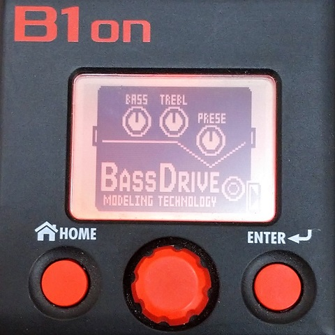
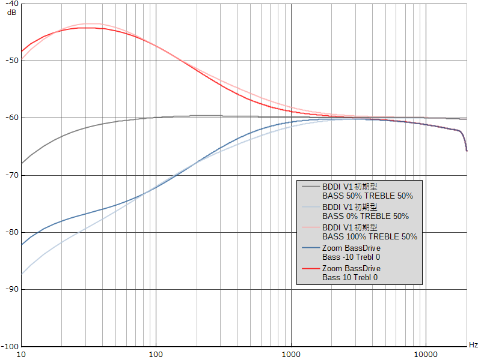
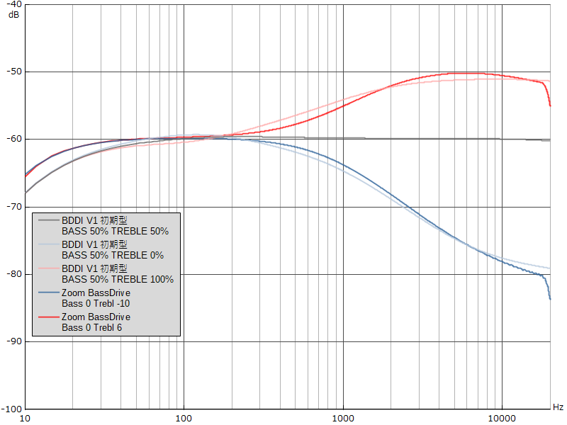
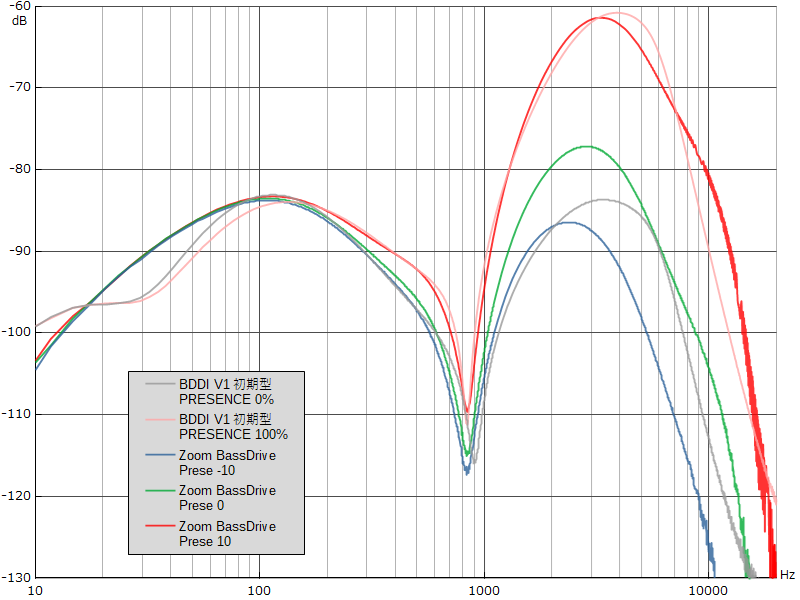
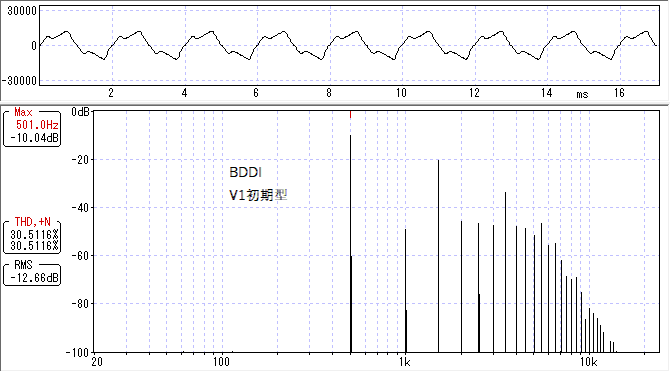
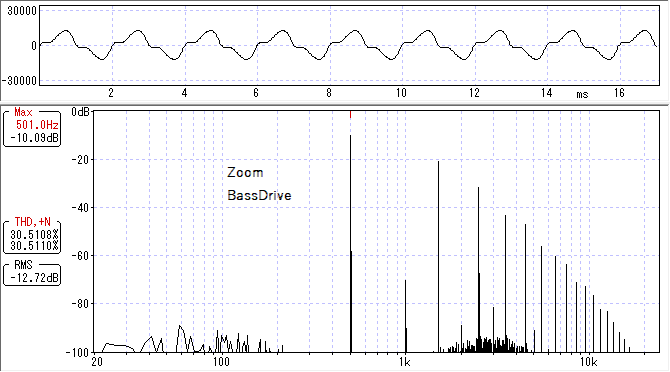

ZOOM BassDrive 特性測定
2022年04月16日 カテゴリー：修理・改造・解析

Zoom製マルチエフェクターには、SansAmp Bass Driver DI（以下BDDI）のモデリングとされるBassDriveというエフェクトが内蔵されています。今回B1onを使って特性測定し、BDDI V1初期型と比較してみます。
＜BASS＞

概ね同じ特性となっています。
ちなみにBassDriveのMidは、歪み側（BDDIでいうチューブアンプエミュレーション回路部）の450Hzあたりを増減するようになっていて、Blendが0だと効きません。
＜TREBLE＞

BDDI V1初期型はTREBLEポットの片側に抵抗が入っているので、高音域側の増幅量が少なくなっています。BassDrive側を10ではなく6にすると同じような特性になりました。
＜PRESENCE＞

BDDIはDRIVE 0、ZoomはGain 50とし、できるだけ似せるようにしてみました。多少ズレていますが、特徴は出ているのかなという感じです。
＜波形・倍音＞
※周波数特性が一致していないので、あまり参考にならないかもしれません。


BDDIはPRESENCE 0%、BassDriveはPrese 0で、歪率が30%になるようゲイン調整しました。BDDIでは波形が角ばっていて、倍音構成が複雑となっています。これはオペアンプでの歪みが関係しているためだと思われます。
B1on内蔵BassDriveは、BDDI V1初期型に概ね似ているということがわかりましたが、完全に同一というわけではないようです（もちろんBDDI自体の個体差があるので何とも言えない部分もあります）。とはいえ、とりあえずBDDIと同じ雰囲気の音が出したいという場合は、手ごろでよいのではないかと思います。